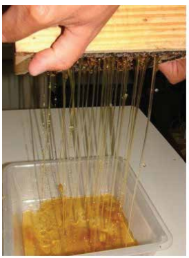

Mel - beneficiamento
O mel produzido pelos meliponíneos foi utilizado inicialmente como adoçante natural, na medicina e em rituais religiosos pelos nativos das Américas e tem sido usado por indígenas e não indígenas nas áreas rurais, sendo importante fonte de renda para estas comunidades. No México, os meliponíneos tiveram um papel significativo na religião dos maias, uma das civilizações mais antigas do mundo. Nesse país, de um total de 46 espécies conhecidas de abelhas sem ferrão, 19 destas são utilizadas atualmente para produção de mel, pólen e cerume, na polinização de culturas, artesanato, arte popular e na medicina (Ayala et al., 2013). De acordo com os autores, algumas espécies são utilizadas com mais regularidade do que outras, dependendo da abundância existente no local. Das espécies usadas, seis são endêmicas e restritas a determinadas regiões.Se considerarmos a riqueza de espécies e as regiões onde vivem essas abelhas com diferentes floradas ao longo das estações do ano, poderemos ter uma ideia da quantidade de tipos de méis, de sabores e aromas, o que torna os méis de meliponíneos uma iguaria, um produto nativo muito especial, encontrado em diferentes regiões do Brasil e de outros países, mas ainda pouco conhecido da população urbana (Figura 39AC). Apesar da diversidade de abelhas conhecidas por produzir mel nas Américas, todo consumo de mel atual está focado na abelha doméstica que é exótica (A. mellifera), mas considerada a mais produtiva.
Mas esse panorama está mudando, pois o mercado está cada vez mais seletivo. Uma das grandes preocupações do mercado mundial visa a diminuição de resíduos antibióticos e defensivos agrícolas no mel. A apicultura orgânica possui preço diferenciado no mercado e a comercialização do mel chamado ”socialmente justo”, também conhecido como fair trade, também paga valores acima do preço de mercado para apoiar as comunidades carentes e que possuem ação conservacionista (Paula Neto & Almeida Neto, 2005). O mel de meliponíneos se enquadra nestes segmentos quando produzidos por comunidades pobres, sem a adição de antibióticos e em ambientes naturais livres de agrotóxicos. No Brasil, o consumo do mel de meliponíneos ainda é baixo devido principalmente à falta de informações e disponibilidade do produto. A produção é artesanal e o comércio regional. O aumento do consumo está sujeito à melhoria da qualidade e aumento da produção. O nordeste do país é tradicionalmente conhecido como o maior produtor. Seu consumo está em expansão impulsionado pelo apelo de saúde, justiça social, aparência do produto e a sustentabilidade da atividad. Apesar da expansão e da importância da meliponicultura, ainda existem problemas a serem solucionados. Dos problemas relacionados por Carvalho et al., (2013), no Rio Grande do Sul, a grande diversidade de espécies que gera a necessidade de pesquisa e tecnologia para a criação e a qualidade dos produtos com vistas ao consumidor final são questões que ainda precisam ser equacionadas.Não existe no país um mercado estabelecido, especializado em meliponicultura (Villas-Bôas, 2012). O mercado mundial de mel dos meliponíneos ainda está no começo e restrito a iniciativas particulares no Brasil, México, Costa Rica e Austrália, com impacto regional (Alves, 2013).
No Brasil esse mel é produzido, consumido e/ou comercializado de maneira informal em diferentes regiões do país não existindo legislação específica que regulamente a cadeia produtiva dos produtos originados da meliponicultura (Villas--Bôas, 2012). A falta de regulamentação do mel de meliponíneos torna o comércio eficiente impossível, dificultando o acesso do consumidor ao produto e tornando a atividade desanimadora (Alves, 2013).
Atualmente, como a legislação brasileira que regulamenta os requisitos de qualidade para o produto mel é baseada no de A. mellifera (BRASIL, 2000), a maioria das amostras dos méis dos meliponíneos analisadas não se enquadra nesta legislação, especialmente quanto ao parâmetro umidade (Carvalho et al., 2013). De acordo com Alves et al., (2011), os méis de meliponíneos possuem inúmeras características diferenciadas do mel de A. mellifera, o que justifica um modelo especial de Controle de Qualidade para o mel dessas abelhas.A diversidade de espécies com potencial de produção e suas especificidades comportamentais proporcionam características distintas aos produtos dos meliponíneos quando comparados aos das abelhas melíferas. Essa questão tem motivado a realização de pesquisas para a caracterização físico-química e microbiológica do mel dessas abelhas, mas poucos são os estudos que analisaram muitos méis de uma mesma espécie (Carvalho et al., 2013).
As espécies de meliponíneos com maior número de amostras analisadas pertencem ao gênero Melipona e são muito importantes para meliponicultura pela quantidade do mel produzido. A jataí (Tetragosnisca), devido a sua ampla distribuição e rusticidade é uma excelente alternativa para produção de mel, enquanto espécies de Scaptotrigona pode ser uma opção tanto para produção de mel quanto de própolis (Venturieri, 2008; Souza et al., 2012).
Para os méis das abelhas sem ferrão ainda é necessário a caracterização do produto e a criação de padrões de acordo com a espécie de abelha, a vegetação, os fatores edáficos e climáticos das respectivas regiões em que são produzidos e, principalmente, a utilização de técnicas adequadas de higienização e sanitização (Fonseca et al., 2006). A caracterização e padronização de acordo com estas condições e a utilização de boas práticas de fabricação possibilitarão a melhoria da qualidade do mel produzido e a garantia do produto de qualidade ao consumidor
De acordo com Villas-Bôas (2012), em função da diversidade de meliponíneos e dos contextos socioambientais em que a meliponicultura se manifesta no país, a imposição de um protocolo único e padronizado, como ocorre com a apicultura tende a ser mal sucedida.O mel das abelhas sem ferrão é armazenado em potes feitos de cerume (mistura de cera e resinas). Esses potes auxiliam na conservação e influenciam na cor e no sabor dos méis estocados em seu interior. Além disso, entre as diversas peculiaridades dos méis dos meliponíneos verifica-se o maior conteúdo de água e a maior acidez (Fonseca et al., 2006; Venturieri, 2007; Roubik, 2013). Um dos maiores desafios para a produção do mel dos meliponíneos é garantir a estabilidade e longevidade, ou seja, o tempo de validade, de um produto muito suscetível à fermentação devido ao alto percentual de umidade (quantidade de água) que pode variar entre 25 a 35% da composição, além do seu conteúdo de leveduras, agentes de fermentação (Villas-Bôas, 2012). Carvalho et al., (2013) destacam a importância do manejo adequado das colônias e a implantação das boas práticas de produção do mel, desde a implantação do meliponário até os processos de colheita, beneficiamento e armazenamento do mel. Os autores propõem um regulamento técnico de qualidade do mel processado (refrigerado ou desumidificado) para as abelhas do gênero Melipona.